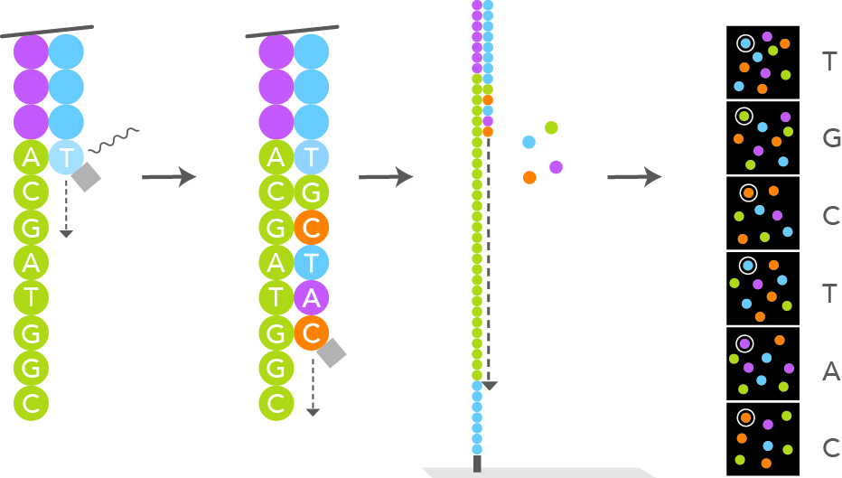
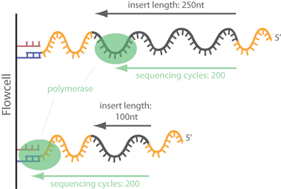
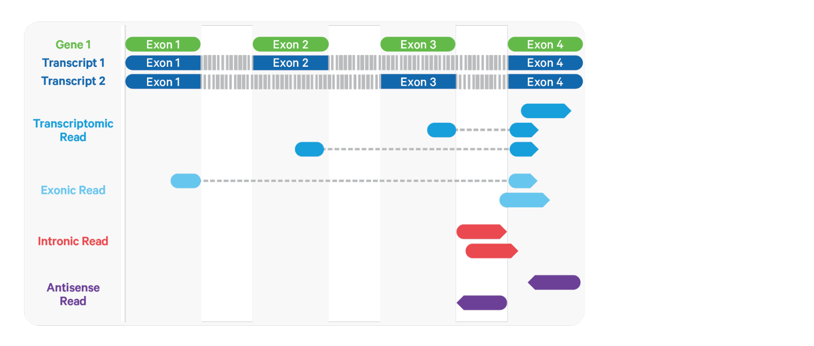

Single Cell Raw Data Processing
Kerry Cobb
Goals
- Understand the steps for processing raw single cell RNA-seq data
- See how to run software for each processing step
- See scripts for running each piece of software on HPC
Dataset
- Childhood acute lymphoblastic leukemia
- Most common childood cancer
- Precursor B-cell acute lymphoblastic leukemia (B-ALL)
- ~85% of cases
- Good prognosis
- T-cell acute lymphoblastic leukemia (T-ALL)
- ~15% of cases
- Other patients are refractory or will relapse and succumb
- Compare 4 B-ALL, 2 T-ALL, and 3 healthy controls
- Cells are Bone Marrow Mononuclear cells (BMMCs)
- Each cell sequenced on a different lane of Illumina
- What’s wrong with that?
Workflow
- Data download
- Quality control
- Mapping & alignment
- Feature counting
Logging in to the HPC
Git Repository
All of the code and data for this workshop is available on GitHub.
You can clone the repository to your home directory on the HPC using the following command:
Symlink to existing output data
cd ~/Single-Cell-Transcriptomics/leukemia/
ln -s /core/cbc/tutorials/workshopdirs/Single-Cell-Transcriptomics/leukemia/results/
cd ~/Single-Cell-Transcriptomics/resources/Homo_sapiens.GRCh38
ln -s /core/cbc/tutorials/workshopdirs/Single-Cell-Transcriptomics/resources/Homo_sapiens.GRCh38/Homo_sapiens.GRCh38.114.chr.gtf
ln -s /core/cbc/tutorials/workshopdirs/Single-Cell-Transcriptomics/resources/Homo_sapiens.GRCh38/Homo_sapiens.GRCh38.dna.primary_assembly.fa- You would skip this if doing these analyses on your own
- Some of these steps take a long time to run, so we have provided the output data for you to use in the workshop.
- Please don’t copy these data on the cluster!
Reference Genome
- Required for mapping reads
- NCBI & Ensemble are good source
- For examples see:
resources/Homo_sapiens.GRCh38/download.shresources/GRCh38.p14/GRCh38_download.sh
FASTA Format
- Common format for storing nucleotide sequences
- Typically used for reference genomes
- Each sequence is represented by two lines:
- Identifier line (starts with ‘>’)
- Sequence line (the actual nucleotide sequence)
- Example:
>SEQ_ID
GATTTGGGGTTTAAAGGGTGACCTGGTAGGData Download
- NCBI Sequence Read Archive (SRA)
- https://www.ncbi.nlm.nih.gov/bioproject/PRJNA548203
- Use SRA Toolkit to download
include-technical- Necessary to obtain Cell and UMI barcodes
- See:
leukemia/scripts/01_download.sh
FASTQ Format
- Typical raw data format for sequencing reads
- Contains sequence data and quality scores
- Typically separated into two or more files
- One for each end of a read, if paired
- Technical reads such as barcodes or UMIs
- Each read is represented by four lines:
- Header line (starts with ‘@’)
- Sequence line (the actual nucleotide sequence)
- Separator line (starts with ‘+’)
- Quality score line (ASCII-encoded quality scores for each nucleotide in the sequence)
- Example:
@SEQ_ID
GATTTGGGGTTTAAAGGGTGACCTGGTAGG
+
!''*((((***+))%%%++)(****)())-+**--1FASTQ Format - Quality Scores
- Quality scores are encoded using ASCII characters
- Each character represents a 2 digit quality score for the corresponding nucleotide
- This permits more efficient storage
- The quality score is a measure of the confidence in the accuracy of the base call
- The higher the quality score, the more reliable the base call
- Calculated as
-10 * log10(P)wherePis the probability of an incorrect base call - Examples:
- Q = 10, P = 0.1 (10% chance of error)
- Q = 30, P = 0.001 (0.1% chance of error)
FASTQ Format - Headers
- The header line contains metadata about the read
- Illumina headers typicallly look like this:
@HWUSI-EAS100R:6:73:941:1973#0/1The components of the header are:
- HWUSI-EAS100R: the unique instrument name
- 6: flowcell lane
- 73: tile number within the flowcell lane
- 941: ‘x’-coordinate of the cluster within the tile
- 1973: ‘y’-coordinate of the cluster within the tile
- #0: index number for a multiplexed sample (0 for no indexing)
- /1: the member of a pair, /1 or /2
Annotations
- Annotations provide additional information about the sequences
- They can include gene names, descriptions, and other metadata
- Annotations are often stored in separate files, such as GTF or GFF files
- GTF (Gene Transfer Format) and GFF (General Feature Format) are common formats
- Annotation files contain information about gene structures, such as exons, introns, and transcripts
- GTF & GFF files are similar but GFF can include more complex features and relationships
- GFF is preferred
Annotations
- Can be downloaded from Ensembl or NCBI
- 10X Genomics provides a custom annotation file for human and mouse
Quality Control
- Quality of reads
- Quantify of reads
- Adapters Contamination
Adapter Contamination
Can occur if insert size is too short


Fastqc
- Evaluates several metrics for a FASTQ file
- Provides a summary of the quality of the reads
- Generates an HTML report with visualizations and statistics
- Can be run with the command:
Multiqc
- Consolidates multiple reports from FastQC and other tools
- Generates a single HTML report with visualizations and statistics
- Useful for comparing multiple samples or conditions
Mapping & Alignment
- Determination of which part of the genome a read comes from
- Can be done with or without alignment
- Popular tools include:
- Cell Ranger (commercial software from 10x Genomics) [Zheng et al., 2017]
- zUMIs [Parekh et al., 2018]
- alevin [Srivastava et al., 2019]
- RainDrop [Niebler et al., 2020]
- kallisto|bustools [Melsted et al., 2021]
- STARsolo [Kaminow et al., 2021]
- alevin-fry [He et al., 2022]
Mapping & Alignment
- Methods can be broadly categorized into three types:
- Spliced alignment
- Contiguous alignment
- Lightweight mapping (pseudoalignment)
- Alignment-based methods provide easily interpreted mapping scores
- Lightweight methods are faster
Spliced Alignment
- Reads can align across multiple distinct segments of a reference 
Contiguous Alignment
- Reads require a continuous segment of the reference
- Large gaps such as introns are not allowed
- Faster
- Requires annotated transcript sequences as reference
- Not suitable for single nucleus RNA-seq data
- Can be used with augmented transcriptome
- Full length unspliced transcripts or excised intronic sequences
STARsolo
- Much faster alternative to Cell Ranger
- Produces near identical output to Cell Ranger
- Cell Ranger uses STAR for alignment
- STAR can be used for other types of single cell RNA-seq data
- No need to learn a new tool or make large modifications to the workflow
- Requires an index for the reference genome}
STARsolo Indexing
-sjdbOverhang- Length of the longest read minus 1
- For example, if the longest read is 150 bp, then
-sjdbOverhangshould be set to 149
STARsolo Args
soloCBwhitelist- The allowed cell barcodes
- These are packged with cell ranger
soloUMIlensoloType- Type of single-cell RNA-seq
- Probaly will want to use CB_UMI_Simple
- One UMI and one cell barcode of fixed length
soloUMIlen- 10 for v2
- 12 for >v3
readFilesIn- 1st file is cDNA read
- 2nd file barcode (cell+UMI)
readFilesCommandzcatif gzipped
soloOutFormatFeaturesGzipped- compress output mtx files,
scanpyexpects these to be .gz
- compress output mtx files,
SAM & Bam file formats
- Output is a SAM file
- SAM (Sequence Alignment/Map) is a text format for storing aligned reads
- It contains information about the alignment of each read to the reference genome
- SAM files are human-readable, but can be large
- They can be compressed to BAM format for storage and efficiency
- They are compressed and indexed for efficient access
- Not human-readable
- SAM/BAM files can be viewed with tools like IGV or samtools
- They are used for downstream analyses like feature counting and variant calling
- Example SAM file:
@HD VN:1.0 SO:unsorted @SQ SN:chr1 LN:248956422 @RG ID:group1 SM:sample1 @PG ID:program1 PN:STAR VN:2.7.9a read1 0 chr1 100 60 10M1I5M2D3M * 0 0 ACGTACGTAC IIIIIIIIIIIIIIIIIIII AS:i:10 NM:i:1
CIGAR String
- CIGAR (Compact Idiosyncratic Gapped Alignment Report) string is a part of the SAM/BAM format
- It describes how the read aligns to the reference genome
- It consists of a series of operations, each represented by a character and a number
- Common operations include:
- M: match or mismatch
- I: insertion
- D: deletion
- N: skipped region (intron)
- S: soft clipping (part of the read is not aligned)
- Example CIGAR string:
10M1I5M2D3M- This means 10 matches, 1 insertion, 5 matches, 2 deletions, and 3 matches
Feature Counting
- Quantify abundance of each gene using UMIs
- STAR-solo also does feature counting for us
Feature Counts

Single Cell Analysis
Up next!